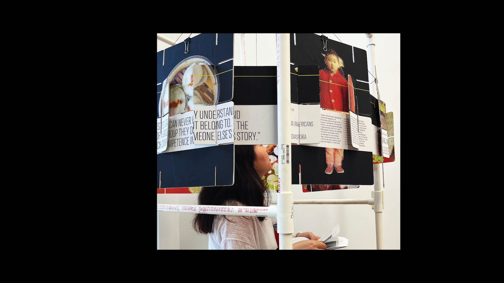
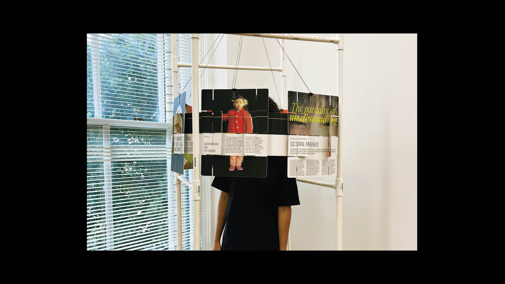

-
● Course Project
A spatial experience around human understanding, crafted from Eames House of Cards.
-
Skills
Graphic Design
Design Systems -
Duration
6 weeks
Sprint 2023 -
Tools
Adobe InDesign
Adobe Illustrator
Adobe Photoshop
Adobe After Effects
-
A stark contrast between the digestable literary/AI-generated content, and the raw stories of personal experiences reflected through two complementary color, image, and type systems. Repeated colors, treated in different ways, holds a narrative around human understanding and comfort. The digestible content is visually digestible, easy to read from the outside and from a distance. The real, personal content is chaotic and complicated, hard to understand and only viewable from within.
A requirement for this project was to craft an experience out of a deck of Eames House of Cards, a historical design artifact that represents play, interaction, and imagination. I chose this specific cylindar form to facilitate an "inside/outside" experience for my cards because I wanted to capture the dichotomy of understanding someone in concept, and knowing their true experiences.
To achieve this, I created a rig that suspended the cards and created a space for each viewer to have an intimate and personal conversation with the piece. -
● Conclusions
Displayed for 5 days at the Ballay Center for Design Fusion in September, 2023 during the "artificial: ___" exhibition.
-
This project was really fun, physical fabrication aside. I loved thinking and working with a final, non-conventional form in mind and really tailored the visual design to the physical experience of viewing the project.
-  